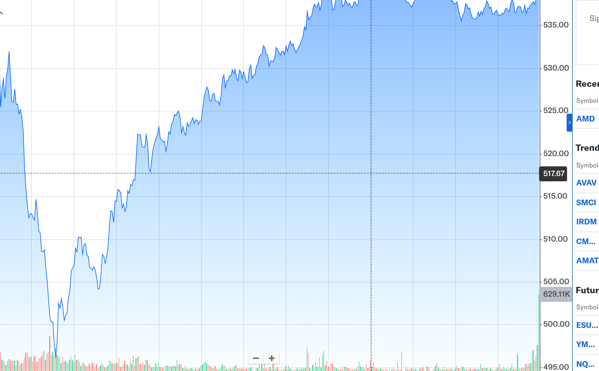
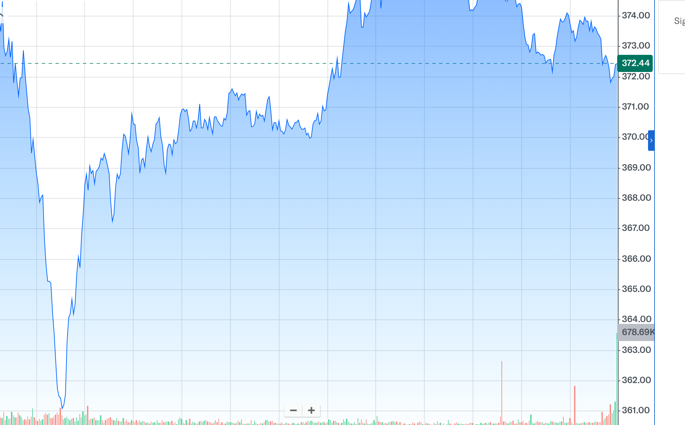
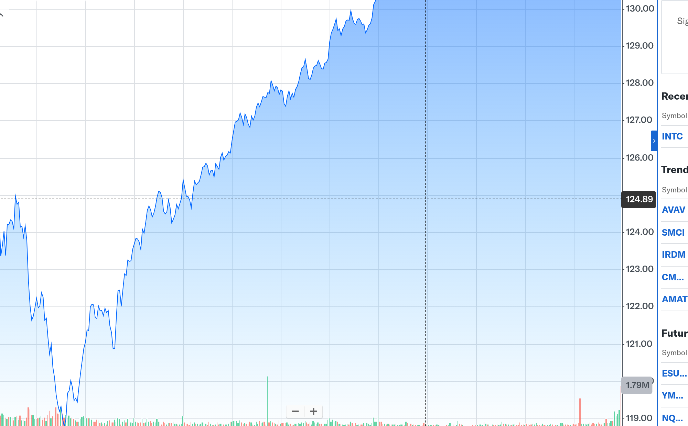
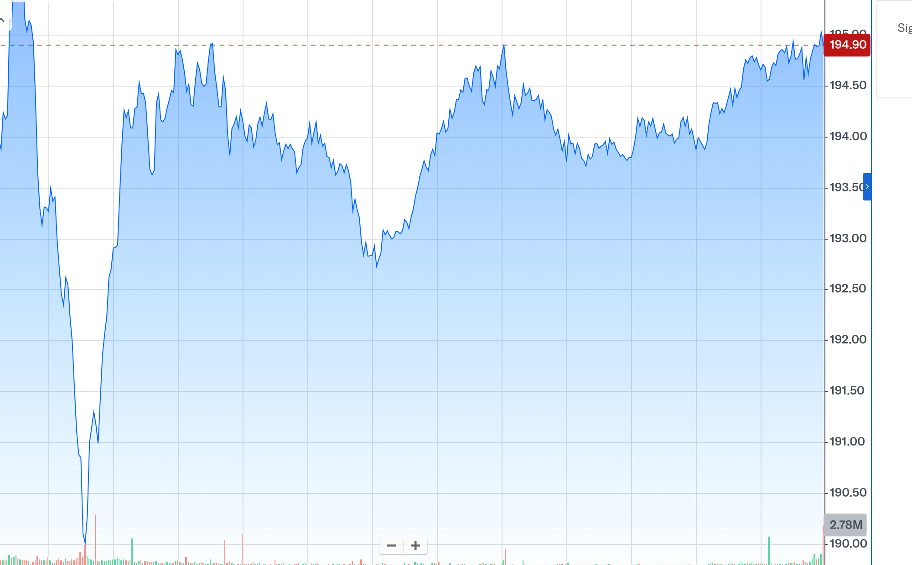
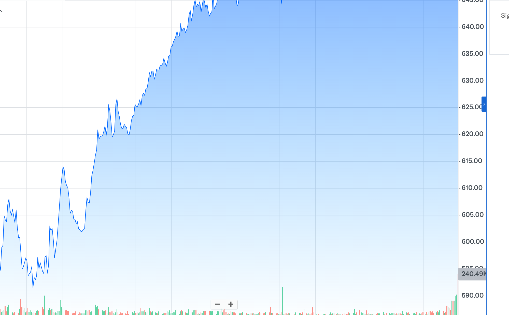

📊 K 線圖庫｜2026-06-30
40 檔 AI 基礎建設精選股 · 120 個交易日（半年）日 K + 成交量
每日 14:00 更新
5 張 K 線
點圖連 Yahoo Finance

AMD
AMD
→ 在 Yahoo Finance 開啟完整 K 線

AVGO
Broadcom
→ 在 Yahoo Finance 開啟完整 K 線

INTC
Intel
→ 在 Yahoo Finance 開啟完整 K 線

NVDA
NVIDIA
→ 在 Yahoo Finance 開啟完整 K 線

WDC
Western Digital
→ 在 Yahoo Finance 開啟完整 K 線
📊 自動產生於 2026-06-30 06:00 UTC
資料來源：
Yahoo Finance
· 原始碼
github.com/acstep/stock-charts